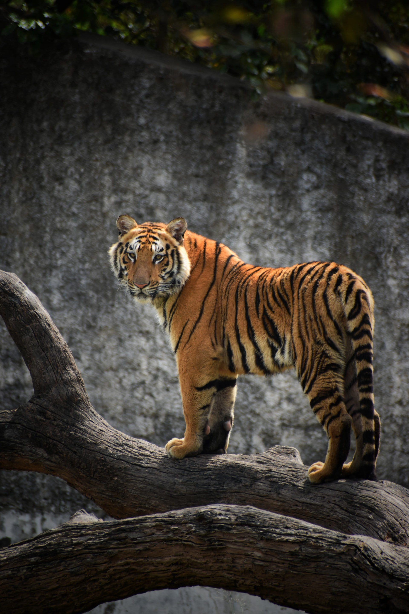

Tigers usually prefer to eat self-killed prey. The tiger mates all year round, but most cubs are born between March and June, with a second peak in September.
Tigers usually prefer to eat self-killed prey. The tiger mates all year round, but most cubs are born between March and June, with a second peak in September.
The tiger is mostly found on southeast Asia. They are also found in tropical forests, or in cold areas with a lot of snow.
The tiger is the largest living cat species. It is most recognisable for its orange skin color and for its black stripes. It is an apex predator. It primarily hunts big animals like: deers, elephants, etc. Tiger cubs stay with their mother for about two years, then become independent and leave their mother's home range to establish their own.
The tiger is listed as Endangered on the Red List.Tigers are also victims of human–wildlife conflicts.The tiger is among the most recognisable and popular animal of the world.
The tiger's closest living relatives were previously thought to be the Panthera species lion and leopard.The tiger has a muscular body with powerful legs, a large head and a tail that is about half the length of its body.The tiger's skull is similar to a lion's skull . The tiger historically ranged from eastern Turkey to the coast of the Sea of Japan, and from South Asia across Southeast Asia to the Indonesian islands of Java and Bali.
Tigers usually prefer to eat self-killed prey. The tiger mates all year round, but most cubs are born between March and June, with a second peak in September.